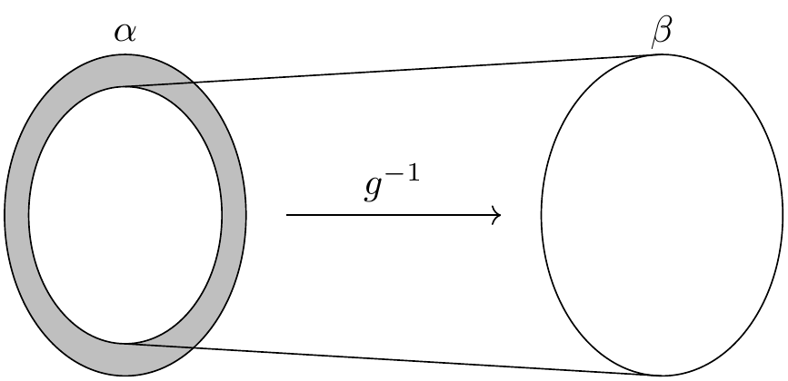
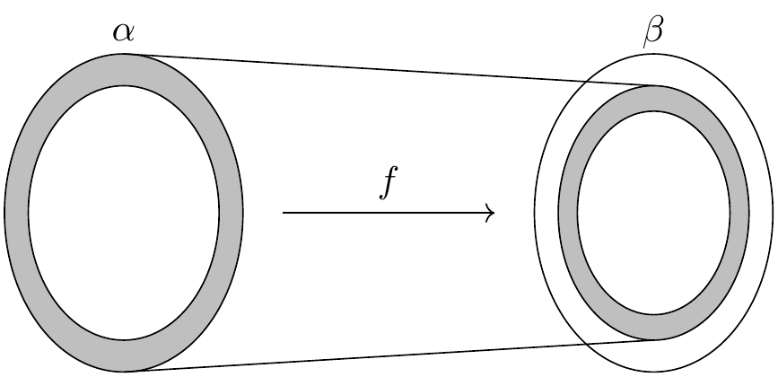
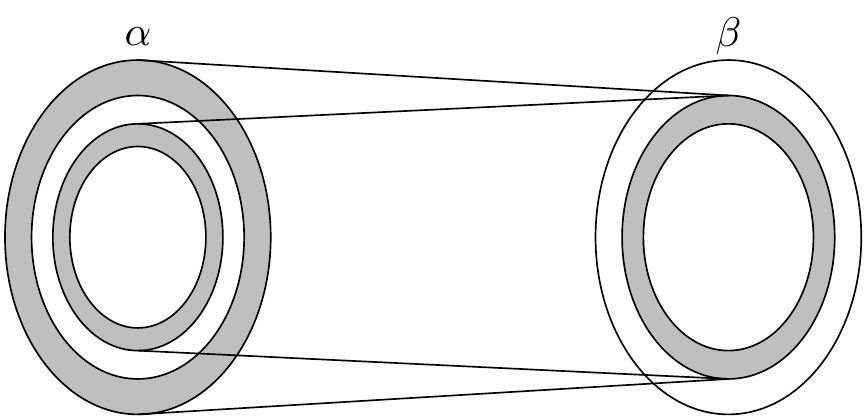

4. 集合和函数
集合、关系和函数的词汇为所有数学分支的构造提供了统一的语言。 由于函数和关系可以用集合来定义，因此公理集合论可以作为数学的基础。
作为 Lean 基础的原始概念则是 类型，它包括在类型间定义函数的方法。
Lean 中的每个表达式都有一个类型：自然数、实数、从实数到实数的函数、群、向量空间等等。
有的表达式 是 类型，也就是说，它们的类型是 Type.
Lean 和 Mathlib 提供定义新类型的方式，以及定义这些类型的对象的方式。
从概念上讲，你可以把类型看作是一组对象的集合。
要求每个对象都有一个类型有一些好处。
例如，它使得重载像 + 这样的符号成为可能，
有时它还能缩减冗长的输入，因为 Lean 可以从对象的类型中推断出大量信息。
当你将函数应用于错误的参数个数，
或将函数应用于错误类型的参数时，
类型系统还让 Lean 可以标记错误。
Lean 的库确实定义了初等集合论概念。 与集合论不同的是，在 Lean 中，集合总是某种类型的对象和集合， 例如自然数集合或从实数到实数的函数的集合。 类型和集合之间的区别需要一些时间来适应，但本章将带你了解其中的要点。
4.1. 集合
若 α 是任意类型，则类型 Set α 由 α 中的元素组成的集合构成。
这一类型支持常规的集合论运算和关系。
例如， s ⊆ t 是说 s 是 t 的子集，
s ∩ t 是指 s 和 t 的交集，
而 s ∪ t 是指它们的并集。
子集关系可以用 \ss 或 \sub 输入，
交集可以用 \i 或 \cap 输入，
并集可以用 \un 或 \cup 输入。
库中也定义了集合 univ,
它包含类型 α 的全部元素，
以及空集 ∅, 可以用 \empty 输入。
给定 x : α 和 s : Set α,
表达式 x ∈ s 是说 x 是 s 的一个成员。
提到集合成员关系的定理的名字经常含有 mem.
表达式 x ∉ s 是 ¬ x ∈ s 的缩写。
你可以用 \in 或 \mem 输入 ∈, 用 \notin 输入 ∉.
证明关于集合的事情的一种方法是使用 rw 或化简器来展开定义。
在下面的第二个例子中， 我们使用 simp only 告诉化简器只使用我们给它的列表中的等式，
而不是整个数据库中的等式。
不同于 rw, simp 可以在全称或存在量词内实施化简。
如果你逐步查看证明，你可以看到这些命令的效果。
variable {α : Type*}
variable (s t u : Set α)
open Set
example (h : s ⊆ t) : s ∩ u ⊆ t ∩ u := by
rw [subset_def, inter_def, inter_def]
rw [subset_def] at h
simp only [mem_setOf]
rintro x ⟨xs, xu⟩
exact ⟨h _ xs, xu⟩
example (h : s ⊆ t) : s ∩ u ⊆ t ∩ u := by
simp only [subset_def, mem_inter_iff] at *
rintro x ⟨xs, xu⟩
exact ⟨h _ xs, xu⟩
在这个例子中，我们开启了 Set 名字空间以用更短的定理名访问定理。
但事实上，我们可以完全删除 rw 和 simp 的调用：
example (h : s ⊆ t) : s ∩ u ⊆ t ∩ u := by
intro x xsu
exact ⟨h xsu.1, xsu.2⟩
这里发生的事情被称为 定义约化：为了理解 intro 命令和匿名构造函数，
Lean 不得不展开定义。
下面的例子也说明了这一现象：
example (h : s ⊆ t) : s ∩ u ⊆ t ∩ u :=
fun x ⟨xs, xu⟩ ↦ ⟨h xs, xu⟩
为了处理并集，我们可以使用 Set.union_def 和 Set.mem_union.
由于 x ∈ s ∪ t 展开为 x ∈ s ∨ x ∈ t,
我们也可以使用 cases 策略强制要求定义约化。
example : s ∩ (t ∪ u) ⊆ s ∩ t ∪ s ∩ u := by
intro x hx
have xs : x ∈ s := hx.1
have xtu : x ∈ t ∪ u := hx.2
rcases xtu with xt | xu
· left
show x ∈ s ∩ t
exact ⟨xs, xt⟩
. right
show x ∈ s ∩ u
exact ⟨xs, xu⟩
由于交集比联合更紧密，
表达式 (s ∩ t) ∪ (s ∩ u) 中使用括号是不必要的，
但它们使表达式的含义更清晰。
下面是对同一事实更简短的证明：
example : s ∩ (t ∪ u) ⊆ s ∩ t ∪ s ∩ u := by
rintro x ⟨xs, xt | xu⟩
· left; exact ⟨xs, xt⟩
. right; exact ⟨xs, xu⟩
作为练习，试着证明另一方向的包含关系：
example : s ∩ t ∪ s ∩ u ⊆ s ∩ (t ∪ u) := by
sorry
知道以下事实可能有帮助：当使用 rintro 时，
有时我们需要使用括号包围析取模式 h1 | h2 使得 Lean 能正确解析它。
库里也定义了集合的差， s \ t,
其中反斜线是以 \\ 输入的特殊unicode字符。
表达式 x ∈ s \ t 展开为 x ∈ s ∧ x ∉ t.
（ ∉ 可以用 \notin 输入。）
可以使用 Set.diff_eq 和 dsimp 或 Set.mem_diff 手动重写它，
而下面对同一个包含关系的两个证明展示了如何避免使用它们。
example : (s \ t) \ u ⊆ s \ (t ∪ u) := by
intro x xstu
have xs : x ∈ s := xstu.1.1
have xnt : x ∉ t := xstu.1.2
have xnu : x ∉ u := xstu.2
constructor
· exact xs
intro xtu
-- x ∈ t ∨ x ∈ u
rcases xtu with xt | xu
· show False; exact xnt xt
. show False; exact xnu xu
example : (s \ t) \ u ⊆ s \ (t ∪ u) := by
rintro x ⟨⟨xs, xnt⟩, xnu⟩
use xs
rintro (xt | xu) <;> contradiction
作为练习，证明反向的包含关系：
example : s \ (t ∪ u) ⊆ (s \ t) \ u := by
sorry
要证明两个集合相等，
只需证明任一集合中的每个元素都是另一个集合中的元素。
这个原理称为“外延性”，毫不意外的是，
ext 策略可以用于处理它。
example : s ∩ t = t ∩ s := by
ext x
simp only [mem_inter_iff]
constructor
· rintro ⟨xs, xt⟩; exact ⟨xt, xs⟩
. rintro ⟨xt, xs⟩; exact ⟨xs, xt⟩
再次重申，删除 simp only [mem_inter_iff] 一行并不会损害证明。
事实上，如果你喜欢高深莫测的证明项，下面的单行证明就是为你准备的：
example : s ∩ t = t ∩ s :=
Set.ext fun x ↦ ⟨fun ⟨xs, xt⟩ ↦ ⟨xt, xs⟩, fun ⟨xt, xs⟩ ↦ ⟨xs, xt⟩⟩
这是一个更简短的证明，使用了化简器：
example : s ∩ t = t ∩ s := by ext x; simp [and_comm]
除了使用 ext 之外，我们还可以使用 Subset.antisymm 这个定理，
它可以通过证明 s ⊆ t 和 t ⊆ s 来证明集合间的等式 s = t.
example : s ∩ t = t ∩ s := by
apply Subset.antisymm
· rintro x ⟨xs, xt⟩; exact ⟨xt, xs⟩
. rintro x ⟨xt, xs⟩; exact ⟨xs, xt⟩
尝试完成证明项：
example : s ∩ t = t ∩ s :=
Subset.antisymm sorry sorry
请记住，您可以用下划线代替 sorry,
并将鼠标悬停在它上面,
Lean 会向你显示它在这一位置的预期。
下面是一些你可能会喜欢证明的集合论性质：
example : s ∩ (s ∪ t) = s := by
sorry
example : s ∪ s ∩ t = s := by
sorry
example : s \ t ∪ t = s ∪ t := by
sorry
example : s \ t ∪ t \ s = (s ∪ t) \ (s ∩ t) := by
sorry
说到集合的表示，下面就为大家揭秘背后的机制。
在类型论中，类型 α 上的 性质 或 谓词 只是一个函数 P : α → Prop.
这是有意义的：给定 a : α, P a 就是 P 对 a 成立这一命题。
在库中， Set α 定义为 α → Prop 而 x ∈ s 定义为 s x.
换句话说，集合实际上就是性质，只是被当成对象。
库中也定义了集合构造器的符号。
表达式 { y | P y } 展开就是 (fun y ↦ P y),
因此 x ∈ { y | P y } 约化为 P x.
因此我们可以把偶数性质转化为偶数集合：
def evens : Set ℕ :=
{ n | Even n }
def odds : Set ℕ :=
{ n | ¬Even n }
example : evens ∪ odds = univ := by
rw [evens, odds]
ext n
simp
apply Classical.em
你应该逐步跟踪这个证明，
确定你明白发生了什么。
尝试删除 rw [evens, odds] 这一行，
确认证明仍然成立。
事实上，集合构造器符号定义
s ∩ t为{x | x ∈ s ∧ x ∈ t},s ∪ t为{x | x ∈ s ∨ x ∈ t},∅为{x | False}, 以及univ为{x | True}.
我们经常需要精确指定 ∅ 和 univ 的类型，
因为 Lean 很难猜出我们指的是哪种类型。
下面的例子演示了当需要的时候 Lean 如何展开最后两个定义。
在第二个例子中，
trivial 是 库中对 True 的标准证明。
example (x : ℕ) (h : x ∈ (∅ : Set ℕ)) : False :=
h
example (x : ℕ) : x ∈ (univ : Set ℕ) :=
trivial
作为练习，证明下列包含关系。
使用 intro n 以展开子集定义，
使用化简器把集合论构造约化为逻辑。
我们也推荐使用定理 Nat.Prime.eq_two_or_odd 和 Nat.even_iff.
example : { n | Nat.Prime n } ∩ { n | n > 2 } ⊆ { n | ¬Even n } := by
sorry
请注意：有点令人困惑的是，库中有多个版本的谓词 Prime.
最通用的谓词对任何有零元素的交换幺半群都有意义。
谓词 Nat.Prime 是针对自然数的。
幸运的是，有一个定理指出，在特定情况下，
这两个概念是一致的，所以你总是可以把一个谓词改写成另一个谓词。
#print Prime
#print Nat.Prime
example (n : ℕ) : Prime n ↔ Nat.Prime n :=
Nat.prime_iff.symm
example (n : ℕ) (h : Prime n) : Nat.Prime n := by
rw [Nat.prime_iff]
exact h
rwa 策略是在重写后跟着一个假设策略。
example (n : ℕ) (h : Prime n) : Nat.Prime n := by
rwa [Nat.prime_iff]
Lean 引入了记号 ∀ x ∈ s, ...,
“对于任意 x 属于 s .,”
作为 ∀ x, x ∈ s → ... 的简化。
Lean 还引入了记号 ∃ x ∈ s, ...,
“存在 x 属于 s 使得 ..”
有时它们被称为 有界量词,
因为这种构造将它们的意义限制在集合 s 内。
因此，库中使用这些量词的定理通常在名称中包含 ball 或 bex.
定理 bex_def 断言 ∃ x ∈ s, ... 等价于 ∃ x, x ∈ s ∧ ...,
但当它们和 rintro, use 以及匿名构造器一起使用时，
这两个表达式的行为大致相同。
因此，我们通常不需要使用 bex_def 来精确转换它们。
这是关于它们用法的一些例子：
variable (s t : Set ℕ)
example (h₀ : ∀ x ∈ s, ¬Even x) (h₁ : ∀ x ∈ s, Prime x) : ∀ x ∈ s, ¬Even x ∧ Prime x := by
intro x xs
constructor
· apply h₀ x xs
apply h₁ x xs
example (h : ∃ x ∈ s, ¬Even x ∧ Prime x) : ∃ x ∈ s, Prime x := by
rcases h with ⟨x, xs, _, prime_x⟩
use x, xs
看看你能否证明这些略有不同的版本：
section
variable (ssubt : s ⊆ t)
example (h₀ : ∀ x ∈ t, ¬Even x) (h₁ : ∀ x ∈ t, Prime x) : ∀ x ∈ s, ¬Even x ∧ Prime x := by
sorry
example (h : ∃ x ∈ s, ¬Even x ∧ Prime x) : ∃ x ∈ t, Prime x := by
sorry
end
带下标的并集和交集是另一种重要的集合论构造。
我们可以把 α 中的元素组成的集合的序列 \(A_0, A_1, A_2, \ldots\)
建模为函数 A : ℕ → Set α,
此时 ⋃ i, A i 表示它们的并集，
而 ⋂ i, A i 表示它们的交集。
这里自然数没有什么特别之处，因此 ℕ 可以替换为任意作为指标集的类型 I.
下面说明它们的用法。
variable {α I : Type*}
variable (A B : I → Set α)
variable (s : Set α)
open Set
example : (s ∩ ⋃ i, A i) = ⋃ i, A i ∩ s := by
ext x
simp only [mem_inter_iff, mem_iUnion]
constructor
· rintro ⟨xs, ⟨i, xAi⟩⟩
exact ⟨i, xAi, xs⟩
rintro ⟨i, xAi, xs⟩
exact ⟨xs, ⟨i, xAi⟩⟩
example : (⋂ i, A i ∩ B i) = (⋂ i, A i) ∩ ⋂ i, B i := by
ext x
simp only [mem_inter_iff, mem_iInter]
constructor
· intro h
constructor
· intro i
exact (h i).1
intro i
exact (h i).2
rintro ⟨h1, h2⟩ i
constructor
· exact h1 i
exact h2 i
带下标的并集或交集通常需要使用括号， 因为与量词一样，绑定变量的范围会尽可能地扩展。
尝试证明下列恒等式。
其中一个方向需要经典逻辑！
我们建议在证明的适当位置使用 by_cases xs : x ∈ s.
example : (s ∪ ⋂ i, A i) = ⋂ i, A i ∪ s := by
sorry
Mathlib 也有有界并集和有界交集，它们类似于有界量词。
您可以使用 mem_iUnion₂ 和 mem_iInter₂ 揭示它们的含义。
正如下面的示例所示，Lean 的化简器也可以执行这些替换。
def primes : Set ℕ :=
{ x | Nat.Prime x }
example : (⋃ p ∈ primes, { x | p ^ 2 ∣ x }) = { x | ∃ p ∈ primes, p ^ 2 ∣ x } :=by
ext
rw [mem_iUnion₂]
simp
example : (⋃ p ∈ primes, { x | p ^ 2 ∣ x }) = { x | ∃ p ∈ primes, p ^ 2 ∣ x } := by
ext
simp
example : (⋂ p ∈ primes, { x | ¬p ∣ x }) ⊆ { x | x = 1 } := by
intro x
contrapose!
simp
apply Nat.exists_prime_and_dvd
试着解决下面这个类似的例子。
如果你开始输入 eq_univ,
标签补全器会告诉你 apply eq_univ_of_forall 是开始证明的好方法。
我们还推荐使用 Nat.exists_infinite_primes 定理。
example : (⋃ p ∈ primes, { x | x ≤ p }) = univ := by
sorry
给定一组集合 s : Set (Set α),
它们的并集 ⋃₀ s 具有类型 Set α,
定义为 {x | ∃ t ∈ s, x ∈ t}.
类似地，它们的交集 ⋂₀ s 定义为
{x | ∀ t ∈ s, x ∈ t}.
这些运算分别称为 sUnion 和 sInter.
下面的例子展示了它们与有界并集和有界交集的关系。
variable {α : Type*} (s : Set (Set α))
example : ⋃₀ s = ⋃ t ∈ s, t := by
ext x
rw [mem_iUnion₂]
simp
example : ⋂₀ s = ⋂ t ∈ s, t := by
ext x
rw [mem_iInter₂]
rfl
在库中，这些恒等式称为 sUnion_eq_biUnion 和 sInter_eq_biInter.
4.2. Functions
If f : α → β is a function and p is a set of
elements of type β,
the library defines preimage f p, written f ⁻¹' p,
to be {x | f x ∈ p}.
The expression x ∈ f ⁻¹' p reduces to f x ∈ p.
This is often convenient, as in the following example:
variable {α β : Type*}
variable (f : α → β)
variable (s t : Set α)
variable (u v : Set β)
open Function
open Set
example : f ⁻¹' (u ∩ v) = f ⁻¹' u ∩ f ⁻¹' v := by
ext
rfl
If s is a set of elements of type α,
the library also defines image f s,
written f '' s,
to be {y | ∃ x, x ∈ s ∧ f x = y}.
So a hypothesis y ∈ f '' s decomposes to a triple
⟨x, xs, xeq⟩ with x : α satisfying the hypotheses xs : x ∈ s
and xeq : f x = y.
The rfl tag in the rintro tactic (see Section 3.2) was made precisely
for this sort of situation.
example : f '' (s ∪ t) = f '' s ∪ f '' t := by
ext y; constructor
· rintro ⟨x, xs | xt, rfl⟩
· left
use x, xs
right
use x, xt
rintro (⟨x, xs, rfl⟩ | ⟨x, xt, rfl⟩)
· use x, Or.inl xs
use x, Or.inr xt
Notice also that the use tactic applies rfl
to close goals when it can.
Here is another example:
example : s ⊆ f ⁻¹' (f '' s) := by
intro x xs
show f x ∈ f '' s
use x, xs
We can replace the line use x, xs by
apply mem_image_of_mem f xs if we want to
use a theorem specifically designed for that purpose.
But knowing that the image is defined in terms
of an existential quantifier is often convenient.
The following equivalence is a good exercise:
example : f '' s ⊆ v ↔ s ⊆ f ⁻¹' v := by
sorry
It shows that image f and preimage f are
an instance of what is known as a Galois connection
between Set α and Set β,
each partially ordered by the subset relation.
In the library, this equivalence is named
image_subset_iff.
In practice, the right-hand side is often the
more useful representation,
because y ∈ f ⁻¹' t unfolds to f y ∈ t
whereas working with x ∈ f '' s requires
decomposing an existential quantifier.
Here is a long list of set-theoretic identities for you to enjoy. You don’t have to do all of them at once; do a few of them, and set the rest aside for a rainy day.
example (h : Injective f) : f ⁻¹' (f '' s) ⊆ s := by
sorry
example : f '' (f ⁻¹' u) ⊆ u := by
sorry
example (h : Surjective f) : u ⊆ f '' (f ⁻¹' u) := by
sorry
example (h : s ⊆ t) : f '' s ⊆ f '' t := by
sorry
example (h : u ⊆ v) : f ⁻¹' u ⊆ f ⁻¹' v := by
sorry
example : f ⁻¹' (u ∪ v) = f ⁻¹' u ∪ f ⁻¹' v := by
sorry
example : f '' (s ∩ t) ⊆ f '' s ∩ f '' t := by
sorry
example (h : Injective f) : f '' s ∩ f '' t ⊆ f '' (s ∩ t) := by
sorry
example : f '' s \ f '' t ⊆ f '' (s \ t) := by
sorry
example : f ⁻¹' u \ f ⁻¹' v ⊆ f ⁻¹' (u \ v) := by
sorry
example : f '' s ∩ v = f '' (s ∩ f ⁻¹' v) := by
sorry
example : f '' (s ∩ f ⁻¹' u) ⊆ f '' s ∩ u := by
sorry
example : s ∩ f ⁻¹' u ⊆ f ⁻¹' (f '' s ∩ u) := by
sorry
example : s ∪ f ⁻¹' u ⊆ f ⁻¹' (f '' s ∪ u) := by
sorry
You can also try your hand at the next group of exercises,
which characterize the behavior of images and preimages
with respect to indexed unions and intersections.
In the third exercise, the argument i : I is needed
to guarantee that the index set is nonempty.
To prove any of these, we recommend using ext or intro
to unfold the meaning of an equation or inclusion between sets,
and then calling simp to unpack the conditions for membership.
variable {I : Type*} (A : I → Set α) (B : I → Set β)
example : (f '' ⋃ i, A i) = ⋃ i, f '' A i := by
sorry
example : (f '' ⋂ i, A i) ⊆ ⋂ i, f '' A i := by
sorry
example (i : I) (injf : Injective f) : (⋂ i, f '' A i) ⊆ f '' ⋂ i, A i := by
sorry
example : (f ⁻¹' ⋃ i, B i) = ⋃ i, f ⁻¹' B i := by
sorry
example : (f ⁻¹' ⋂ i, B i) = ⋂ i, f ⁻¹' B i := by
sorry
The library defines a predicate InjOn f s to say that
f is injective on s.
It is defined as follows:
example : InjOn f s ↔ ∀ x₁ ∈ s, ∀ x₂ ∈ s, f x₁ = f x₂ → x₁ = x₂ :=
Iff.refl _
The statement Injective f is provably equivalent
to InjOn f univ.
Similarly, the library defines range f to be
{x | ∃y, f y = x},
so range f is provably equal to f '' univ.
This is a common theme in Mathlib:
although many properties of functions are defined relative
to their full domain,
there are often relativized versions that restrict
the statements to a subset of the domain type.
Here is are some examples of InjOn and range in use:
open Set Real
example : InjOn log { x | x > 0 } := by
intro x xpos y ypos
intro e
-- log x = log y
calc
x = exp (log x) := by rw [exp_log xpos]
_ = exp (log y) := by rw [e]
_ = y := by rw [exp_log ypos]
example : range exp = { y | y > 0 } := by
ext y; constructor
· rintro ⟨x, rfl⟩
apply exp_pos
intro ypos
use log y
rw [exp_log ypos]
Try proving these:
example : InjOn sqrt { x | x ≥ 0 } := by
sorry
example : InjOn (fun x ↦ x ^ 2) { x : ℝ | x ≥ 0 } := by
sorry
example : sqrt '' { x | x ≥ 0 } = { y | y ≥ 0 } := by
sorry
example : (range fun x ↦ x ^ 2) = { y : ℝ | y ≥ 0 } := by
sorry
To define the inverse of a function f : α → β,
we will use two new ingredients.
First, we need to deal with the fact that
an arbitrary type in Lean may be empty.
To define the inverse to f at y when there is
no x satisfying f x = y,
we want to assign a default value in α.
Adding the annotation [Inhabited α] as a variable
is tantamount to assuming that α has a
preferred element, which is denoted default.
Second, in the case where there is more than one x
such that f x = y,
the inverse function needs to choose one of them.
This requires an appeal to the axiom of choice.
Lean allows various ways of accessing it;
one convenient method is to use the classical choose
operator, illustrated below.
variable {α β : Type*} [Inhabited α]
#check (default : α)
variable (P : α → Prop) (h : ∃ x, P x)
#check Classical.choose h
example : P (Classical.choose h) :=
Classical.choose_spec h
Given h : ∃ x, P x, the value of Classical.choose h
is some x satisfying P x.
The theorem Classical.choose_spec h says that Classical.choose h
meets this specification.
With these in hand, we can define the inverse function as follows:
noncomputable section
open Classical
def inverse (f : α → β) : β → α := fun y : β ↦
if h : ∃ x, f x = y then Classical.choose h else default
theorem inverse_spec {f : α → β} (y : β) (h : ∃ x, f x = y) : f (inverse f y) = y := by
rw [inverse, dif_pos h]
exact Classical.choose_spec h
The lines noncomputable section and open Classical
are needed because we are using classical logic in an essential way.
On input y, the function inverse f
returns some value of x satisfying f x = y if there is one,
and a default element of α otherwise.
This is an instance of a dependent if construction,
since in the positive case, the value returned,
Classical.choose h, depends on the assumption h.
The identity dif_pos h rewrites if h : e then a else b
to a given h : e,
and, similarly, dif_neg h rewrites it to b given h : ¬ e.
The theorem inverse_spec says that inverse f
meets the first part of this specification.
Don’t worry if you do not fully understand how these work.
The theorem inverse_spec alone should be enough to show
that inverse f is a left inverse if and only if f is injective
and a right inverse if and only if f is surjective.
Look up the definition of LeftInverse and RightInverse
by double-clicking or right-clicking on them in VS Code,
or using the commands #print LeftInverse and #print RightInverse.
Then try to prove the two theorems.
They are tricky!
It helps to do the proofs on paper before
you start hacking through the details.
You should be able to prove each of them with about a half-dozen
short lines.
If you are looking for an extra challenge,
try to condense each proof to a single-line proof term.
variable (f : α → β)
open Function
example : Injective f ↔ LeftInverse (inverse f) f :=
sorry
example : Surjective f ↔ RightInverse (inverse f) f :=
sorry
We close this section with a type-theoretic statement of Cantor’s famous theorem that there is no surjective function from a set to its power set. See if you can understand the proof, and then fill in the two lines that are missing.
theorem Cantor : ∀ f : α → Set α, ¬Surjective f := by
intro f surjf
let S := { i | i ∉ f i }
rcases surjf S with ⟨j, h⟩
have h₁ : j ∉ f j := by
intro h'
have : j ∉ f j := by rwa [h] at h'
contradiction
have h₂ : j ∈ S
sorry
have h₃ : j ∉ S
sorry
contradiction
4.3. The Schröder-Bernstein Theorem
We close this chapter with an elementary but nontrivial theorem of set theory. Let \(\alpha\) and \(\beta\) be sets. (In our formalization, they will actually be types.) Suppose \(f : \alpha → \beta\) and \(g : \beta → \alpha\) are both injective. Intuitively, this means that \(\alpha\) is no bigger than \(\beta\) and vice-versa. If \(\alpha\) and \(\beta\) are finite, this implies that they have the same cardinality, which is equivalent to saying that there is a bijection between them. In the nineteenth century, Cantor stated that same result holds even in the case where \(\alpha\) and \(\beta\) are infinite. This was eventually established by Dedekind, Schröder, and Bernstein independently.
Our formalization will introduce some new methods that we will explain in greater detail in chapters to come. Don’t worry if they go by too quickly here. Our goal is to show you that you already have the skills to contribute to the formal proof of a real mathematical result.
To understand the idea behind the proof, consider the image of the map \(g\) in \(\alpha\). On that image, the inverse of \(g\) is defined and is a bijection with \(\beta\).
{kind=link}
The problem is that the bijection does not include the shaded region in the diagram, which is nonempty if \(g\) is not surjective. Alternatively, we can use \(f\) to map all of \(\alpha\) to \(\beta\), but in that case the problem is that if \(f\) is not surjective, it will miss some elements of \(\beta\).
{kind=link}
But now consider the composition \(g \circ f\) from \(\alpha\) to itself. Because the composition is injective, it forms a bijection between \(\alpha\) and its image, yielding a scaled-down copy of \(\alpha\) inside itself.
{kind=link}
This composition maps the inner shaded ring to yet another such set, which we can think of as an even smaller concentric shaded ring, and so on. This yields a concentric sequence of shaded rings, each of which is in bijective correspondence with the next. If we map each ring to the next and leave the unshaded parts of \(\alpha\) alone, we have a bijection of \(\alpha\) with the image of \(g\). Composing with \(g^{-1}\), this yields the desired bijection between \(\alpha\) and \(\beta\).
We can describe this bijection more simply. Let \(A\) be the union of the sequence of shaded regions, and define \(h : \alpha \to \beta\) as follows:
In other words, we use \(f\) on the shaded parts, and we use the inverse of \(g\) everywhere else. The resulting map \(h\) is injective because each component is injective and the images of the two components are disjoint. To see that it is surjective, suppose we are given a \(y\) in \(\beta\), and consider \(g(y)\). If \(g(y)\) is in one of the shaded regions, it cannot be in the first ring, so we have \(g(y) = g(f(x))\) for some \(x\) is in the previous ring. By the injectivity of \(g\), we have \(h(x) = f(x) = y\). If \(g(y)\) is not in the shaded region, then by the definition of \(h\), we have \(h(g(y))= y\). Either way, \(y\) is in the image of \(h\).
This argument should sound plausible, but the details are delicate. Formalizing the proof will not only improve our confidence in the result, but also help us understand it better. Because the proof uses classical logic, we tell Lean that our definitions will generally not be computable.
noncomputable section
open Classical
variable {α β : Type*} [Nonempty β]
The annotation [Nonempty β] specifies that β is nonempty.
We use it because the Mathlib primitive that we will use to
construct \(g^{-1}\) requires it.
The case of the theorem where \(\beta\) is empty is trivial,
and even though it would not be hard to generalize the formalization to cover
that case as well, we will not bother.
Specifically, we need the hypothesis [Nonempty β] for the operation
invFun that is defined in Mathlib.
Given x : α, invFun g x chooses a preimage of x
in β if there is one,
and returns an arbitrary element of β otherwise.
The function invFun g is always a left inverse if g is injective
and a right inverse if g is surjective.
#check (invFun g : α → β)
#check (leftInverse_invFun : Injective g → LeftInverse (invFun g) g)
#check (leftInverse_invFun : Injective g → ∀ y, invFun g (g y) = y)
#check (invFun_eq : (∃ y, g y = x) → g (invFun g x) = x)
We define the set corresponding to the union of the shaded regions as follows.
variable (f : α → β) (g : β → α)
def sbAux : ℕ → Set α
| 0 => univ \ g '' univ
| n + 1 => g '' (f '' sbAux n)
def sbSet :=
⋃ n, sbAux f g n
The definition sbAux is an example of a recursive definition,
which we will explain in the next chapter.
It defines a sequence of sets
The definition sbSet corresponds to the set
\(A = \bigcup_{n \in \mathbb{N}} S_n\) in our proof sketch.
The function \(h\) described above is now defined as follows:
def sbFun (x : α) : β :=
if x ∈ sbSet f g then f x else invFun g x
We will need the fact that our definition of \(g^{-1}\) is a
right inverse on the complement of \(A\),
which is to say, on the non-shaded regions of \(\alpha\).
This is so because the outermost ring, \(S_0\), is equal to
\(\alpha \setminus g(\beta)\), so the complement of \(A\) is
contained in \(g(\beta)\).
As a result, for every \(x\) in the complement of \(A\),
there is a \(y\) such that \(g(y) = x\).
(By the injectivity of \(g\), this \(y\) is unique,
but next theorem says only that invFun g x returns some y
such that g y = x.)
Step through the proof below, make sure you understand what is going on,
and fill in the remaining parts.
You will need to use invFun_eq at the end.
Notice that rewriting with sbAux here replaces sbAux f g 0
with the right-hand side of the corresponding defining equation.
theorem sb_right_inv {x : α} (hx : x ∉ sbSet f g) : g (invFun g x) = x := by
have : x ∈ g '' univ := by
contrapose! hx
rw [sbSet, mem_iUnion]
use 0
rw [sbAux, mem_diff]
sorry
have : ∃ y, g y = x := by
sorry
sorry
We now turn to the proof that \(h\) is injective. Informally, the proof goes as follows. First, suppose \(h(x_1) = h(x_2)\). If \(x_1\) is in \(A\), then \(h(x_1) = f(x_1)\), and we can show that \(x_2\) is in \(A\) as follows. If it isn’t, then we have \(h(x_2) = g^{-1}(x_2)\). From \(f(x_1) = h(x_1) = h(x_2)\) we have \(g(f(x_1)) = x_2\). From the definition of \(A\), since \(x_1\) is in \(A\), \(x_2\) is in \(A\) as well, a contradiction. Hence, if \(x_1\) is in \(A\), so is \(x_2\), in which case we have \(f(x_1) = h(x_1) = h(x_2) = f(x_2)\). The injectivity of \(f\) then implies \(x_1 = x_2\). The symmetric argument shows that if \(x_2\) is in \(A\), then so is \(x_1\), which again implies \(x_1 = x_2\).
The only remaining possibility is that neither \(x_1\) nor \(x_2\) is in \(A\). In that case, we have \(g^{-1}(x_1) = h(x_1) = h(x_2) = g^{-1}(x_2)\). Applying \(g\) to both sides yields \(x_1 = x_2\).
Once again, we encourage you to step through the following proof
to see how the argument plays out in Lean.
See if you can finish off the proof using sb_right_inv.
theorem sb_injective (hf : Injective f) : Injective (sbFun f g) := by
set A := sbSet f g with A_def
set h := sbFun f g with h_def
intro x₁ x₂
intro (hxeq : h x₁ = h x₂)
show x₁ = x₂
simp only [h_def, sbFun, ← A_def] at hxeq
by_cases xA : x₁ ∈ A ∨ x₂ ∈ A
· wlog x₁A : x₁ ∈ A generalizing x₁ x₂ hxeq xA
· symm
apply this hxeq.symm xA.symm (xA.resolve_left x₁A)
have x₂A : x₂ ∈ A := by
apply _root_.not_imp_self.mp
intro (x₂nA : x₂ ∉ A)
rw [if_pos x₁A, if_neg x₂nA] at hxeq
rw [A_def, sbSet, mem_iUnion] at x₁A
have x₂eq : x₂ = g (f x₁) := by
sorry
rcases x₁A with ⟨n, hn⟩
rw [A_def, sbSet, mem_iUnion]
use n + 1
simp [sbAux]
exact ⟨x₁, hn, x₂eq.symm⟩
sorry
push_neg at xA
sorry
The proof introduces some new tactics.
To start with, notice the set tactic, which introduces abbreviations
A and h for sbSet f g and sb_fun f g respectively.
We name the corresponding defining equations A_def and h_def.
The abbreviations are definitional, which is to say, Lean will sometimes
unfold them automatically when needed.
But not always; for example, when using rw, we generally need to
use A_def and h_def explicitly.
So the definitions bring a tradeoff: they can make expressions shorter
and more readable, but they sometimes require us to do more work.
A more interesting tactic is the wlog tactic, which encapsulates
the symmetry argument in the informal proof above.
We will not dwell on it now, but notice that it does exactly what we want.
If you hover over the tactic you can take a look at its documentation.
The argument for surjectivity is even easier. Given \(y\) in \(\beta\), we consider two cases, depending on whether \(g(y)\) is in \(A\). If it is, it can’t be in \(S_0\), the outermost ring, because by definition that is disjoint from the image of \(g\). Thus it is an element of \(S_{n+1}\) for some \(n\). This means that it is of the form \(g(f(x))\) for some \(x\) in \(S_n\). By the injectivity of \(g\), we have \(f(x) = y\). In the case where \(g(y)\) is in the complement of \(A\), we immediately have \(h(g(y))= y\), and we are done.
Once again, we encourage you to step through the proof and fill in
the missing parts.
The tactic cases n with n splits on the cases g y ∈ sbAux f g 0
and g y ∈ sbAux f g n.succ.
In both cases, calling the simplifier with simp [sbAux]
applies the corresponding defining equation of sbAux.
theorem sb_surjective (hf : Injective f) (hg : Injective g) : Surjective (sbFun f g) := by
set A := sbSet f g with A_def
set h := sbFun f g with h_def
intro y
by_cases gyA : g y ∈ A
· rw [A_def, sbSet, mem_iUnion] at gyA
rcases gyA with ⟨n, hn⟩
rcases n with _ | n
· simp [sbAux] at hn
simp [sbAux] at hn
rcases hn with ⟨x, xmem, hx⟩
use x
have : x ∈ A := by
rw [A_def, sbSet, mem_iUnion]
exact ⟨n, xmem⟩
simp only [h_def, sbFun, if_pos this]
exact hg hx
sorry
We can now put it all together. The final statement is short and sweet,
and the proof uses the fact that Bijective h unfolds to
Injective h ∧ Surjective h.
theorem schroeder_bernstein {f : α → β} {g : β → α} (hf : Injective f) (hg : Injective g) :
∃ h : α → β, Bijective h :=
⟨sbFun f g, sb_injective f g hf, sb_surjective f g hf hg⟩